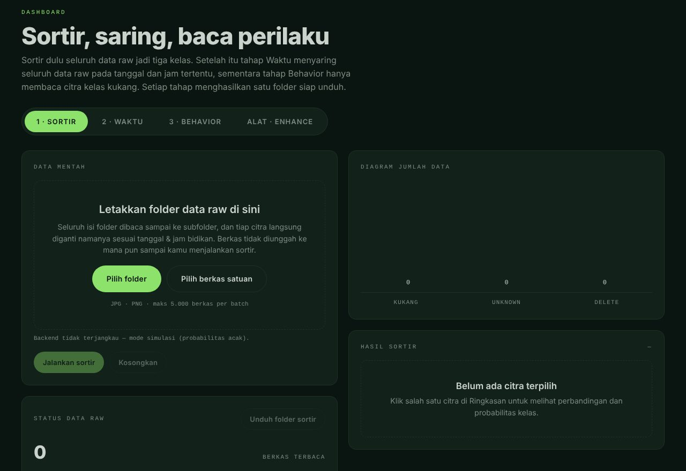
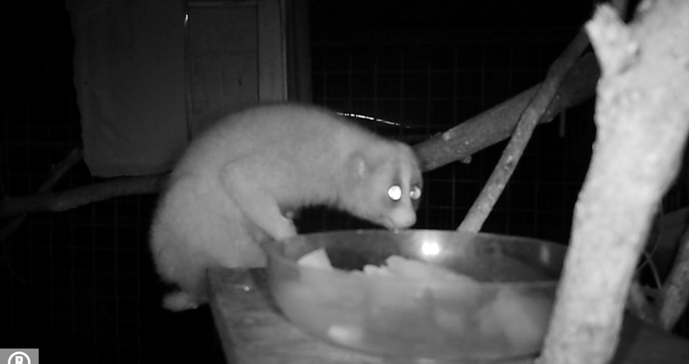

kukang · makan
Final-year project2026
KukangSort AI
A web app that sorts Sunda slow loris (kukang) camera-trap photos automatically, so wildlife researchers don’t have to check every frame by hand.
- UploadOne photo or a whole folder, enhanced like the training data.
- SortYOLO11 splits images into kukang, unknown and delete.
- Read behaviourKukang photos are labelled eating, moving or grooming.
- ExportFiles renamed by capture time, ready to download.
- YOLO11-cls
- Python
- FastAPI
- OpenCV
- JavaScript
- Docker